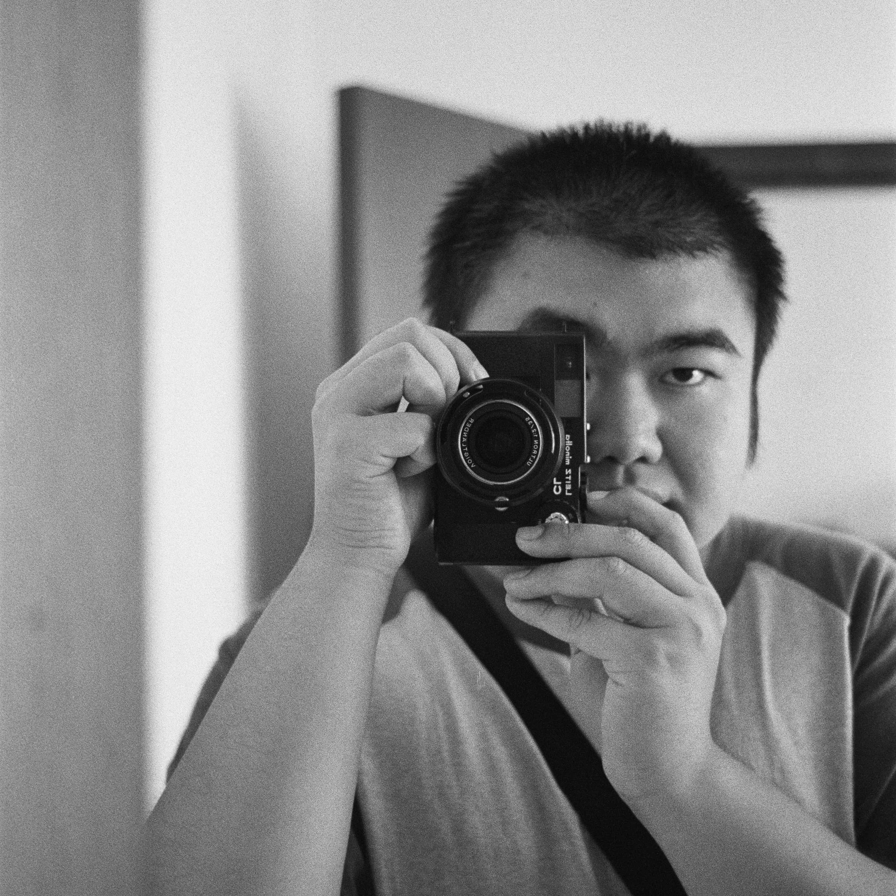

何炜坤
摄影爱好者 / 教培工作者
邮箱: weikunheweikun@gmail.com
手机: +86 17338140709
个人经历
2023.05.03：第一次拿起相机，从此开始享受拍照的乐趣
2025年：取得北京大学药学院理学学士学位
2025年至今：本职工作是一名教培工作者
“愿每一个值得被保留的瞬间都能够被记录。”
个人作品
《无题》
《穿越》
《梦》
《街角》
《买卖》
《过节》